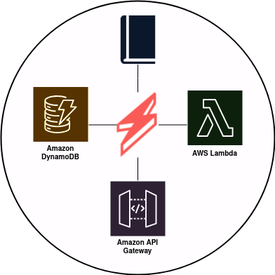
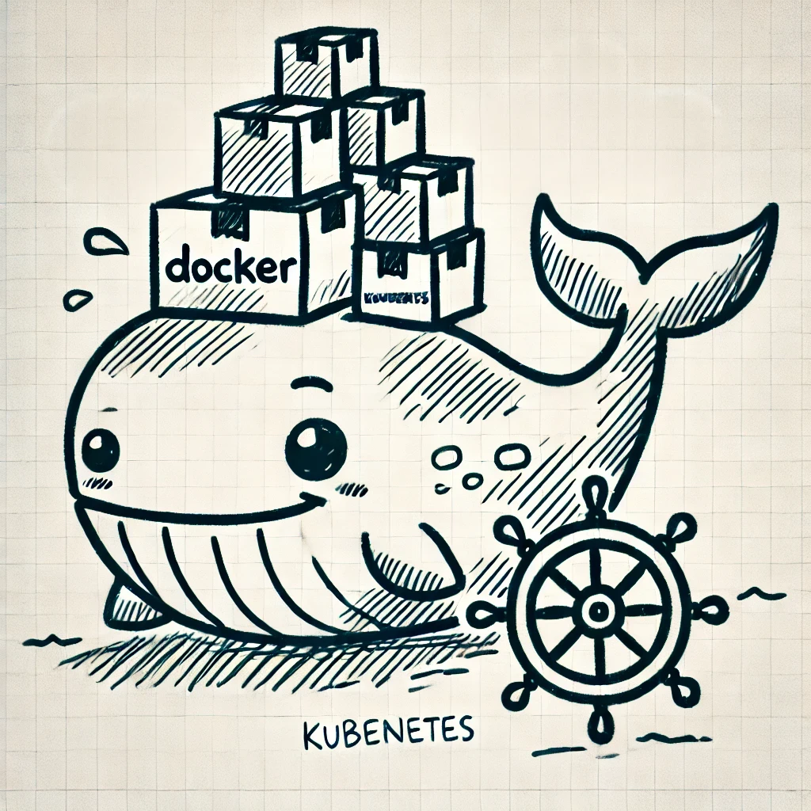

Data Engineer Projects
Details of data engineering projects go here...

Library Ad Web App Using AWS Serverless Infrastructure
Built with AWS Lambda, API Gateway, DynamoDB, and the Serverless Framework, this web app allows users to manage ads and comment on products.

Car Information Web App Using Docker & Kubernetes
This project displays car information stored in MongoDB, using Docker and Kubernetes for containerization and orchestration.
Wildfire Detection System Using MongoDB
This project models and stores wildfire detection data from MODIS satellite sources using MongoDB for flexible schema management and efficient querying.